Church History
A.C.K Diocese of Nairobi
Christ The King Parish – Ruai Archdeaconry
“A combination of vision, formation and growth”
Every institution, individual, family, organisation or business entity in existence or otherwise extinct today, has a story that defines and elaborates its formation, operations and transformation. This is referred to as history. History helps us to understand how events in the past define things the way they are today as well as learn and plan for the future. The church is no exception. The Anglican Church has a rich history which trickles down to the parishes as we know of them today. This reflection on the history of Christ the King parish, and in keeping with the norm, serves to unearth and look at its foundations, appreciate and honour the efforts and sacrifices of its founders, serve as a teaching and reference aid to the congregants and to the ever changing church leadership. Imperatively, it is a useful component for strategic planning and the growth of the church.
ACK Christ The King Parish reflects a journey of faith,sacrifice and vision.
The history of our parish is not complete without a mention of the Holy Innocent Church and Parish (commonly referred to as “mother church”). It covered and ministered to the whole of Ruai, Kamulu and Ngu’ndu areas. It is worthwhile to note that our parish came into being first as a constituent church of the mother church before the parish status.
The Desire and need for second parish in Ruai could not be emphasized The population was growing at a very high rate thus the need to reach out
This fact was cognizant even to the then diocesan bishop (bishop emeritus Rt.Rev.PeterNjoka) who was and still is a resident of the area. On 25th November 2007, in a confirmation service at Holy Innocent mother church, he decreed that beginning 1st January 2008, a new parish to be known as “Christ the King” would come into being. He further outlined on the jurisdictions of both parishes.
All churches on the lower side of Kangundo road to be under the old Holy Innocent parish (then, there were only two churches then i.e. the mother church and A.c.k Makongeni). Later on with time other churches were opened in Kamulu and Ngu’ndu areas as part of the Holy Innocent family.
As decreed, the parish came into being with the Rev.Peterson Njuki as the first vicar. He was warmly received by the congregation in the new years’ service. The constituent churches that formed the parish then were:
- Christ the King Church.
- St. Philip’s Kamulu.
- Capitol Hill Church.
- Ruai central.
Later on as the years advanced and with the demand for a wider spiritual coverage, St. Nicholas Kamulu (then known as A.c.K Elimu) and most recently lower riverside church were established
The church began with about 15 members meeting in homes. With no shelter members endured harsh condition but remained faithful.
Acting upon this directive,9 families with members totaling to slightly over15no. started the congregation which later was known as Ruai center. With no place to worship, Mr.andMrs.Stephen Kigotho Mbaya offered space at their residence for use for Sunday services. They were at the mercies of the weather elements for there was no shelter of any kind. Despite these conditions they persevered knowing in fullness of time God would answer their prayer of having a plot of their own. The Sunday services were largely in kikuyu due to the fact that all members were of that tribal leaning. These early congregants were:
- Mr. and Mrs. Samuel Kigotho Mbaya– parish warden,
- Mr. and Mrs. Samuel Waweru and family,
- Mrs. Virginia Kage and family,
- Mrs. Faith Muthoni (deceased),
- Mrs. Janet Mungai (deceased) and family,
- Mr. Joseph muchoki (wa nyumba),
- Mr. James Macharia,
- Mrs. Rosemary Julius (deceased),
- Mrs. Elizabeth Gathegi (deceased),
- Mrs. Grace Wambui Nga’nga (deceased),
- Mr. and Mrs. Johana Macharia and family,
- Mr. Joseph Mbugua (deceased),
- Mr. and Mrs. Charles Ndegwa,
- Mrs. Faith Muthoni (deceased) and family.
Early members contributed land,time and resources to establish the church.
Through unity and fundraising the church acquired land (KES 170,000.00) and constructed a temporary structure before building a perfect sanctuary
Foundation stone laid 1st June 2003 first service in new structure.2006 Consecration:7th August 2010
From 15 members to over 280 congregants today.
As mentioned previously, the first asset for possession was the land on which the old and new church stand. As years progressed the church has been able to acquire a considerable number of assets in its possession. It is important to note that this process is not static for as long as the church exists there will be improvement and more acquisition to the glory and honour of God
- Church land and parking lot
-land.Nairobi/Block105/502(1/4acre)– church plot– acquired by the early church founders.-Nairobi/Block105/497(1/4acre)– parking area– purchased through fundraiser and funding from CCK at acost of KES 2,250,000.00 on 30 thApril 2013 The vicar then,Ven.E. Kamundia and Mr. Johana Macharia acted as the church’s representatives.-Nairobi/Block105/491(1/4acre)– Sunday school teen’s area– bought in 2005 but exchange and decommissioning done by the bishop,Rt.Rev.Joel Waweru on 15 December 2017.-LR.No.1475(block37mothertitleno.LR84/85½acre)– a donation from Mr. Moses Kamau Kaara and his wife (the late) Mama Rahab Wanjiru Kamau(RIP) located in Matungulu, Mavoko, Machakos County.
- TV screen,laptop,projector
First acquisition in 2010 complete with a computer table being a donation from the finance chairman,Mr.Johanna Macharia. 2no. laptops– one for office use and the other one for Sunday service projection and broadcast. AudioVisual-Projector with retractable screen display– currently not in use after malfunctioning donation by a member who chose anonymity.-TVscreens–congregational project. Managed to purchase 3no at a cost of over KES 100,000.
The parish has been guided by dedicated clergy,lay readers and leaders who have contributed to its growth and stability
The layreaders also referred to as lay ministers are an integral part in the ministry.They assist the vicar in the Sunday worship or any other assigned duties.In the course of time some have retired or moved to other churches.Some were licensed and served initially under H.I.
| first_name | last_name | church | year_licencing | status |
|---|---|---|---|---|
| Mrs.Rebecca | Njuguna | St.NicholasKamulu | 1984 | Retired |
| Mrs.Erina | Ikutwa | CTK | 2004 | Retired |
| Mr.Samuel | Waweru | CTK | 1999 | Serving |
| Mrs.Jane | Kimani | CTK | 2007 | Serving |
| Mrs.Mary | Kimani | CTK | 2011 | Serving |
| Mr.Saminju | Kuria | CTK | 2018 | Serving |
| Miss.Helen | Sebabi | CTK | 2021 | Serving |
| Mr.John M | Shisia | CTK | 2021 | Serving |
| Mrs.Anne | Githaiga | St.PhilipsKamulu | 2004 | Retired |
| Mrs.Lucy | Kuria | St.PhilipsKamulu | 2009 | Serving |
| Mrs.Lucy | Njaaga | St.PhilipsKamulu | 2008 | Serving |
| Mrs.Esther | Gitonga | St.PhilipsKamulu | 2014 | Serving |
| Mr.Jeremiah | Charagu | St.PhilipsKamulu | 2021 | Serving |
| Mr.Alinak | Mwaura | St.NicholasKamulu | 2021 | Serving |
| Mr.Anthony | Muiruri | FormerlyCTK | 2007 | Serving |
| Mrs.Maria | Nyawade | FormerlyCTK | 2005 | Retired |
Christ The King Parish includes:
- Christ The King Church (Headquarters)
- St.Philip's Kamulu
- St.Nicholas Kamulu
- Lower Riverside Church
| Name | Designation | Duration |
|---|---|---|
| Mr.Johana Macharia | Vicar's Warden | Jan2008-July2010 |
| Mrs.Mary Maina(deceased) | People's Warden | Jan2008-Dec2013 |
| Mr.Harun Shisia | Vicar's Warden | Aug2010-June2016 |
| Mrs.Margaret Mungai | People's Warden | Feb2014-Jan2019 |
| Mr.Joseph Ikuha | Vicar's Warden | July2016-Dec2016 |
| Mr.David Karenju | Vicar's Warden | Feb2017- |
| Mr.Joseph Ikuha | People's Warden | Feb2017- |
Departmental Leaders
| Department | Name | Duration |
|---|---|---|
| Mothers Union | Mrs.Lucy Mwaniki | 2008-2016 |
| Mothers Union | Mrs.Winnie Mwaura | 2017-Present |
| KAMA | Mr.George Kuria | 2011-2012 |
| KAMA | Mr.Stephen Njogu | 2019-Present |
| Choir | Mrs.Joyce Ouma | DEC2009-MAR2015 |
| Choir | Mr.John M. Shisia | APR2015-JAN2021 |
| Choir | Mrs.Joyce Ouma | FEB2021-Present |
| Children Ministry | Mrs.Virginia Githegi | JAN2000-DEC2011 |
| Children Ministry | Mrs.Mary Kimani | 2014-Present |
| Development Committee | Mr.Simon Muchai | 2011-2017 |
| Development Committee | Mr.Simon Gitau | 2017-Present |
- Church verger.
- Sunday school Teacher.
- Brigade captain.
- Office messenger.
- Office admin though not formally engaged.
Church Gallery
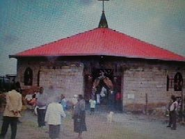
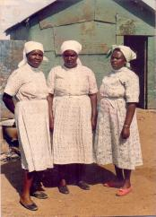
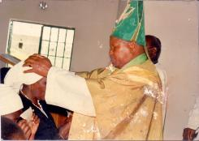
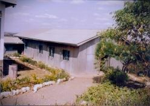
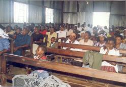
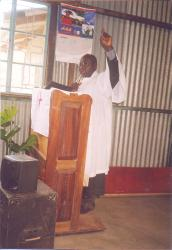
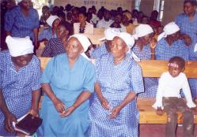
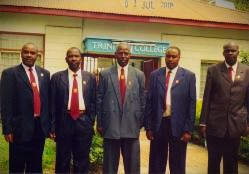
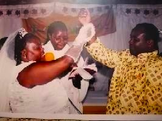
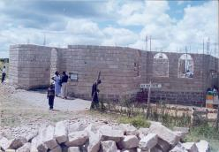
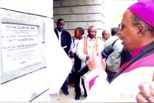
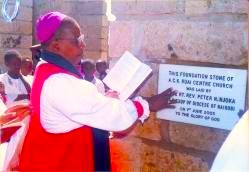
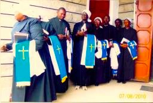
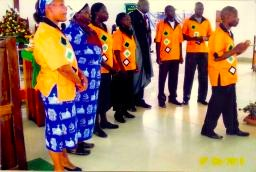
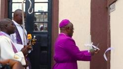
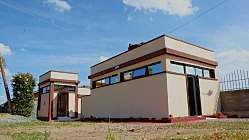
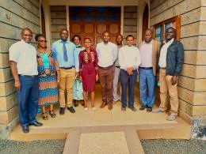

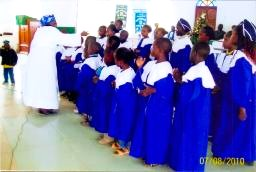
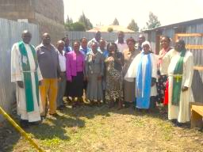
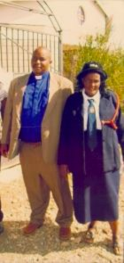
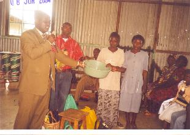
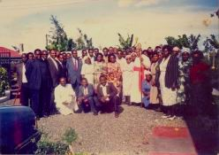
Upcoming Events
Sunday Service
Join us every Sunday for worship and the Word of God.
Youth Fellowship
A time of prayer, learning and fellowship.
Community Outreach
Reaching out and serving our community.
Contact Us
Email: ackchrist.the.kingparish@gmail.com
Phone: +254 732946943